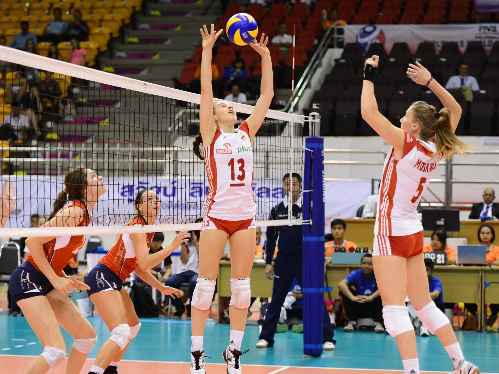

Voleibol
El voleibol es uno de mis deportes favoritos. Me encanta la energía y la dinámica del juego, Lo conoci cuando entre a preparatoria cuando nos exiguian meter un "paraescolar" de deporte y al no ofrecer Basketbol mi unica opcion fue entrar a Voleibol, al principio todo era muy aburrido, eran ejercicios con compañeros que no sabian ni agarrar una pelota y me daba estres, hasta que el profe decidio hacer equipos y que quede con mi grupito de amigas, las cuales no eramos malas, asi que empezaron un torneo y obviamente ganamos, lo que genero que TODOS los dias nos fueramos al campo y contrtataramos un entrenador unicamente para nosotras, toda la prepa e inicios de la universidad nunca dejamos de jugar en torneos del pueblo
